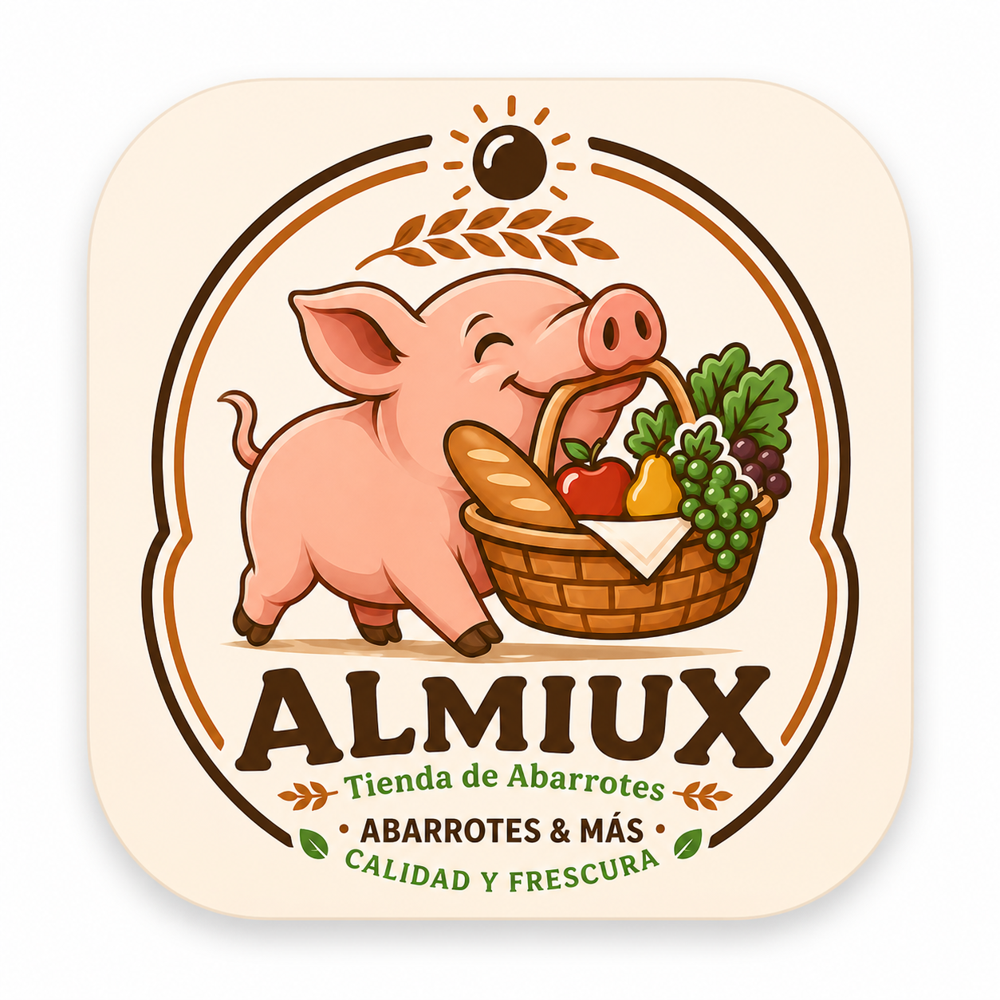
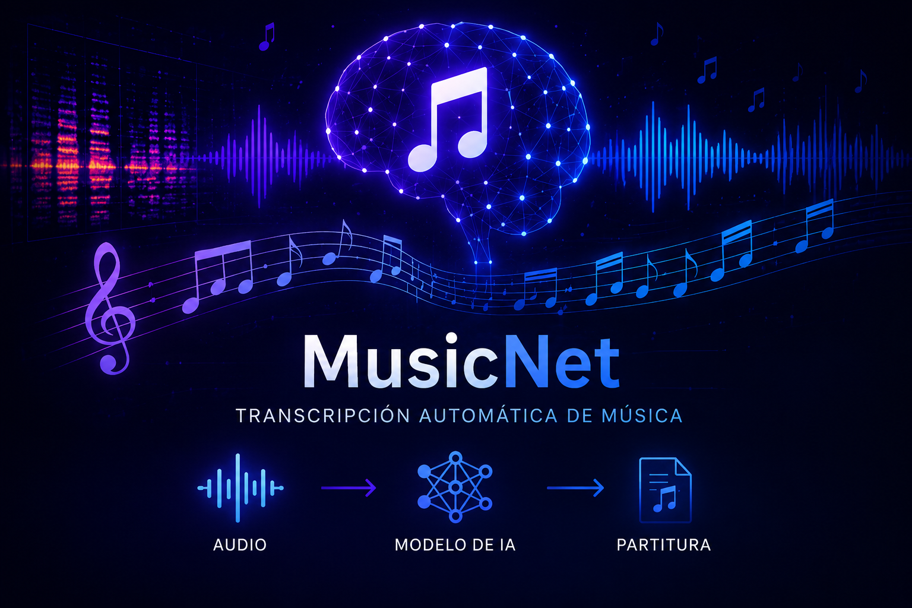

Sobre mí
Desarrollador Java Full Stack Jr. bilingüe, con experiencia en el desarrollo de aplicaciones web,proyectos orientados a inteligencia artificial y procesamiento de datos, creación de proyectos orientados a la solución y optimización de procesos, interesado en aplicar los conocimientos adquiridos para contribuir a la mejora de los procesos de la industria.
Proyectos

Tienda Almiux
Ecommerce simple con HTML, CSS y JS. Desarrollo de una página web para la gestión de inventario de la tienda Almiux Locales, implementando interfaz frontend en HTML y lógica backend en JavaScript. Participación en organización de productos, manejo de datos y estructura básica de sistema web.

MusicNet
Transcripción Musical con IA
Modelo de redes neuronales en Python para transcripción automática de música.